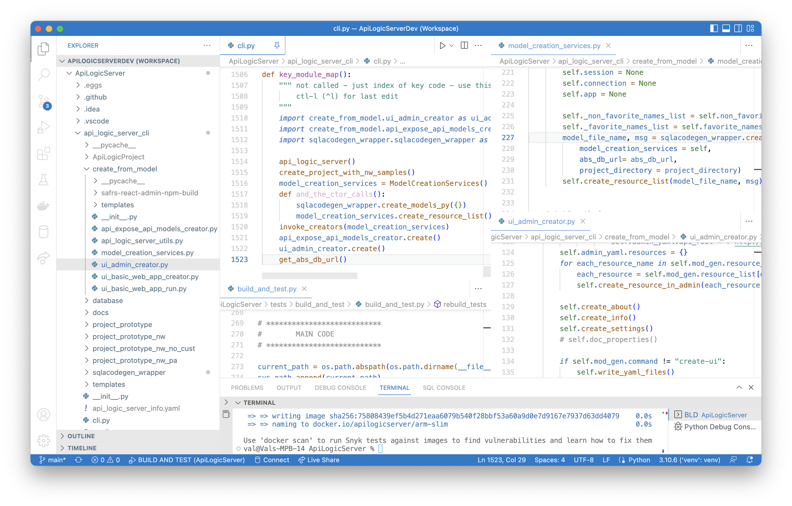
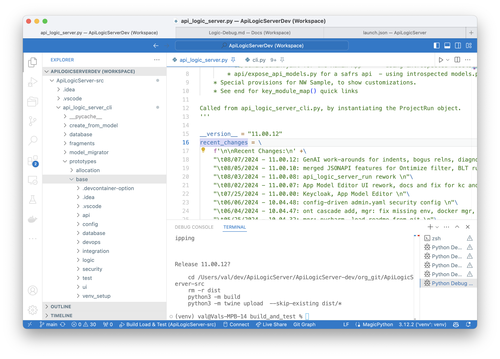
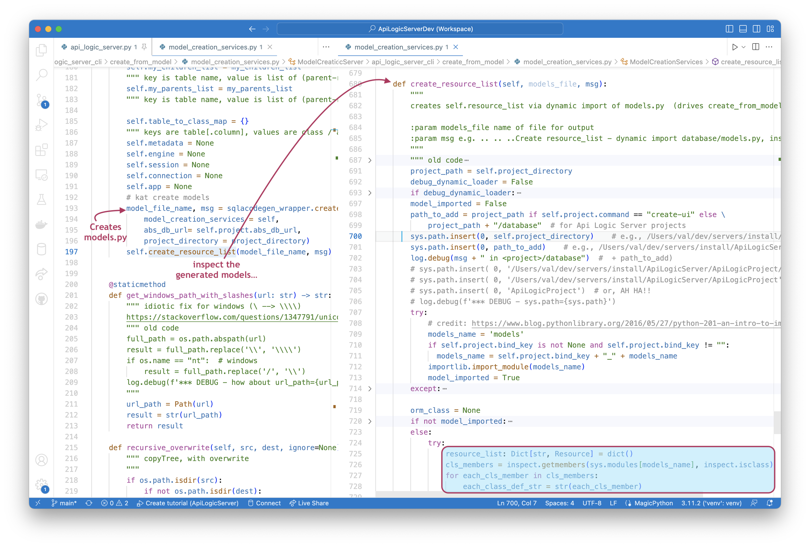
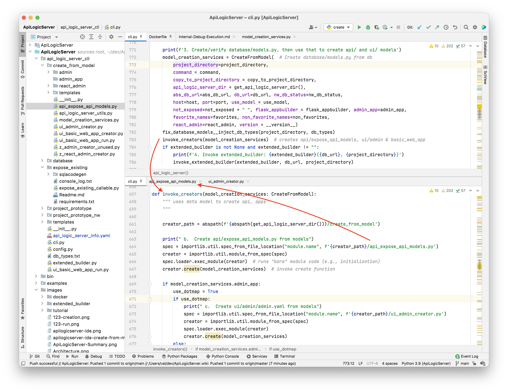

Internals - CLI
This page does not address created projects, rather, it is about the API Logic Server system used to create projects. It is for those who want to extend the product or understand how it works, not for those simply using the product.
Created API Logic Project Structure
For reference, projects are created with this structure:

To create using the source code (e.g, from an IDE), using the venv created from above (note: to get the full log, you must must set APILOGICSERVER_DEBUG as in Run Config 2 - Create servers/ApiLogicProject (DEFAULTS)):
(venv) val@Vals-MPB-14 ApiLogicServer % als create
Patch to enable import of outer directories
Welcome to API Logic Server 11.00.12
Project Name [ApiLogicProject]:
SQLAlchemy Database URI [default = nw.sqlite, ? for help]:
.. ..Manager path: /Users/val/dev/ApiLogicServer/ApiLogicServer-dev/build_and_test/ApiLogicServer
.. ..Interp path: manager_path / venv/bin/python
Creating ApiLogicProject with options:
--db_url=default = nw.sqlite, ? for help
--project_name=ApiLogicProject (pwd: /Users/val/dev/ApiLogicServer/ApiLogicServer-dev/build_and_test/ApiLogicServer)
--from_model=
--bind_key=
--api_name=api
--admin_app=True
--react_admin=False
--flask_appbuilder=False
--id_column_alias=Id
--from_git=
--run=False
--host=localhost
--port=5656
--swagger_host=localhost
--not_exposed=ProductDetails_V
--open_with=code
--use_model=
--favorites=name description
--non_favorites=id
--extended_builder=
--include_tables=
--multi_api=False
--infer_primary_key=False
--opt_locking=optional
--opt_locking_attr=S_CheckSum
ApiLogicServer 11.00.12 Creation Log:
0. Using Sample DB from: sqlite:////Users/val/dev/ApiLogicServer/ApiLogicServer-dev/build_and_test/ApiLogicServer/venv/lib/python3.12/site-packages/api_logic_server_cli/database/nw-gold.sqlite
1. Delete dir: /Users/val/dev/ApiLogicServer/ApiLogicServer-dev/build_and_test/ApiLogicServer/ApiLogicProject
2. Create Project: /Users/val/dev/ApiLogicServer/ApiLogicServer-dev/build_and_test/ApiLogicServer/ApiLogicProject
.. ..Clone from /Users/val/dev/ApiLogicServer/ApiLogicServer-dev/build_and_test/ApiLogicServer/venv/lib/python3.12/site-packages/api_logic_server_cli/prototypes/base
.. ..Copy in nw- customizations: readme
.. ..Copy in sqlite devops
.. ..Sqlite database setup /Users/val/dev/ApiLogicServer/ApiLogicServer-dev/build_and_test/ApiLogicServer/ApiLogicProject/database/db.sqlite...
.. .. ..From /Users/val/dev/ApiLogicServer/ApiLogicServer-dev/build_and_test/ApiLogicServer/venv/lib/python3.12/site-packages/api_logic_server_cli/database/nw-gold.sqlite
.. .. ..db_uri set to: sqlite:////Users/val/dev/ApiLogicServer/ApiLogicServer-dev/build_and_test/ApiLogicServer/ApiLogicProject/database/db.sqlite in <project>/config/config.py
.. ..project_directory_actual: /Users/val/dev/ApiLogicServer/ApiLogicServer-dev/build_and_test/ApiLogicServer/ApiLogicProject
3. Create/verify database/models.py, then use that to create api/ and ui/ models
a. Create Models - create database/models.py, using sqlcodegen
.. .. ..For database: sqlite:////Users/val/dev/ApiLogicServer/ApiLogicServer-dev/build_and_test/ApiLogicServer/ApiLogicProject/database/db.sqlite
.. .. .. ..Create ProductDetails_View as table, because no Unique Constraint
Special case: avoid collision if fkname = parent table name
...
Excluded single field fl on Order.Country
Excluded single field fl on Order.City
render_column show name is true: ProductDetails_View.Id
...
.. .. ..Create resource_list - dynamic import database/models.py, inspect 18 classes in <project>/database
b. Create api/expose_api_models.py from models
c. Create ui/admin/admin.yaml from models
4. Final project fixup
b. Update api_logic_server_run.py with project_name=ApiLogicProject and api_name, host, port
c. Fixing api/expose_services - port, host
d. Updated customize_api_py with port=5656 and host=localhost
e. Updated python_anywhere_wsgi.py with /Users/val/dev/ApiLogicServer/ApiLogicServer-dev/build_and_test/ApiLogicServer/ApiLogicProject
d. Fixing devops/docker-image/build_image.sh - project name
.. ..Updated .vscode/settings.json with "python.defaultInterpreterPath": "/Users/val/dev/ApiLogicServer/ApiLogicServer-dev/build_and_test/ApiLogicServer/venv/bin/python"...
d. Create Ontimize from models
a. Use existing ApiLogicProject/database/models.py - no copy
.. .. ..Create resource_list - dynamic import database/models.py, inspect 0 classes in <project>/database
code "ApiLogicProject"
Creation Internals
 TL/;DR - Deep Copy for default project, create models from schema, create api/ui from models
TL/;DR - Deep Copy for default project, create models from schema, create api/ui from models
The basic process of creating a project is a deep copy of api_logic_server_cli/project_prototype, overlaid (as appropriate) from project_prototype_nw.
Much of the logic is the process of creating the models from the database, using an altered variant of sqlacodegen. The created model is then re-opened to create the internal meta data that drives the builders.
The builders use this to create the api and ui.
The ApiLogicServer source code looks like this:

And here are the prototypes (note this looks much like a runnable project):

Execution begins at ApiLogicServer/api_logic_server_cli/cli.py. It gathers command line arguments and creates an instance of ProjectRun(Project), which proceeds to ProjectRun.create_project(). Its operation is described in the sections below.
1. Delete Dir
The target project directory is deleted. This does not work on Windows, which requires the directory to not exist.
2. Create Project - copy or git clone
The basic project structure is then created, either by a directory copy or git clone. By default, project is created from ApiLogicServer/prototype.
2a. Customize
With limited flexibility, you can provide your own from-git url/path.
NW Examples
For demonstration purposes, the system copies pre-defined logic and services so you can explore them. These are copied from the api_logic_server_cli directory, This is indicated by the following console log entry:
3. Create/verify database/models.py, then use that to create api/ and ui/ models
The main driver instantiates create_from_models/model_creation_services.ModelCreationServics(), whose constructor calls create_models. Described below, this provides access to the model, plus verious services to do things like return favorite fields, joins, etc.
The main driver then executes invoke_creators which calls the create_from_models modules to create api and ui models, based on the create_from_models/model_creation_services object. Before writing models.py, import fixes are made in fix_database_models.
Here is the key excerpt of the main driver in api_logic_server_cli/cli.py:
print(f'3. Create/verify database/models.py, then use that to create api/ and ui/ models')
model_creation_services = ModelCreationServices( ...)
fix_database_models(project_directory, db_types, nw_db_status)
invoke_creators(model_creation_services) # MAJOR! creates api/expose_api_models, ui/admin & basic_web_app
3a. Create Models - create database/models.py
The essence of the project creator is that, given a database model (description), we can generate APIs and UIs. These models are created in `model_creation_services.py - ModelCreationServices.
The essence of the process is illustrated in the key_module_map at the end of ApiLogicServer/api_logic_cli/cli.py. ModelCreationServices provides the model (resource_list) and various services (e.g, findChildList). A key function is to create the model, which starts in the __init()__ constructor:
- It calls
sqlacodegen_wrapper.create_models_pyto create a string of the models file, which is then written to disk inwrite_models_py() - It then calls
create_resource_list()(non-trivial)- It dynamically loads the created
models.py - And builds the model using metadata create by the SAFRS package
- It dynamically loads the created
For more information, see the comments in create_models_py(), easily reached via the key_module_map in ApiLogicServer/api_logic_cli/cli.py:
def key_module_map():
""" not called - just index of key code - use this for hover, goto etc
ctl-l (^l) for last edit
"""
import create_from_model.ui_admin_creator as ui_admin_creator
import create_from_model.api_expose_api_models_creator as api_expose_api_models
import sqlacodegen_wrapper.sqlacodegen_wrapper as sqlacodegen_wrapper
api_logic_server() # main driver, calls...
create_project_with_nw_samples() # clone project, overlay nw
model_creation_services = ModelCreationServices() # creates resource_list (python db model); ctor calls...
def and_the_ctor_calls():
sqlacodegen_wrapper.create_models_py({}) # creates models.py via sqlacodegen
model_creation_services.create_resource_list() # creates resource_list via dynamic import of models.py
invoke_creators(model_creation_services) # creates api, ui via create_from_model...
api_expose_api_models.create() # creates api/expose_api_models.py, key input to SAFRS
ui_admin_creator.create() # creates ui/admin/admin.yaml from resource_list
get_abs_db_url() # nw set here, dbname```
Create resource_list - dynamic import database/models.py, inspect each class
Called from create_models', this dynamically imports
the created (or, rebuild, the existing) models.py,
and creates teh resource_list used by the creator modules.
create_resource_model_from_safrs is a complex process due to dynamic import of models.py - failures may manifest here.

If option: use_model
SQL dialects and bugs can result in failures here. The system therefore enables you to provide your own model, as described in TroubleShooting.
If you elect this option, you should see the following in the console log:
.. ..Copy /Users/val/dev/ApiLogicServer/tests/models.py to /Users/val/dev/servers/sqlserver-types/database/models.py
Extensible generate from models
The models.py file provides resource_list metadata used to create APIs, the admin app, and a react-admin app (steps 31, 3b and 3c), as shown below:

3b. Create api/expose_api_models.py (import / iterate models)
The first creator to be invoked is create_from_model/api_expose_api_models to create expose_api_models.
It uses model_creation_services.resource_list to create create_from_model/model_creation_services#create_models. It is straightforward.
The remaining steps make small updates to the created code to insert database names.
3c. Create ui/admin app (import / iterate models)
The main thing in ui_admin_creator is to create a admin.yaml file - an executable description of the pages and content.
3d. Create ui/basic_web_app with command: flask fab create-app
The system then creates the admin app. The main thing here is to create the views.py file.